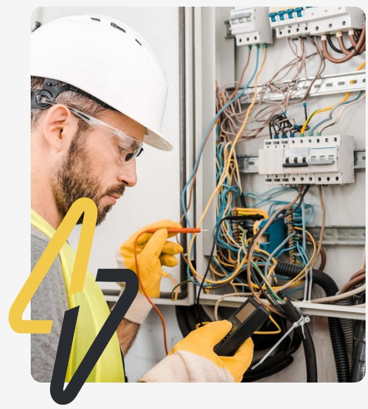

شريكك الموثوق في الصيانة الصناعية والتشغيل المتكامل
نقلل توقفات الإنتاج ونرفع كفاءة التشغيل من خلال صيانة وقائية، فرق متخصصة، وتقارير فنية تساعد الإدارة على اتخاذ القرار. عقود صيانة شاملة، استجابة طوارئ 24/7، ودراسات فنية دقيقة لكل موقع.
- صيانة وقائية تقلل الأعطال
- استجابة طوارئ خلال ساعات
- تقارير فنية لإدارة الموقع
- كوادر فنية معتمدة
5+ سنوات خبرة تشغيلية500+ موقع تم خدمتهمعتمدون في السلامة والجودة
لوحة الأداء ● مباشر
500+عميل راضي خدمناه
24/7استجابة طوارئ
98%نسبة الالتزام بالمواعيد
5+سنوات خبرة ميدانية
تواصل معنا
احجز معاينة مجانية لموقعك
سيب بياناتك في النموذج أو تواصل معنا مباشرة عبر القنوات المتاحة. فريقنا هيتواصل معاك خلال 24 ساعة لتحديد موعد المعاينة.
بيانات التواصل
متاحون على مدار الساعة للطوارئ. للحجز والاستفسار استخدم القنوات التالية.
